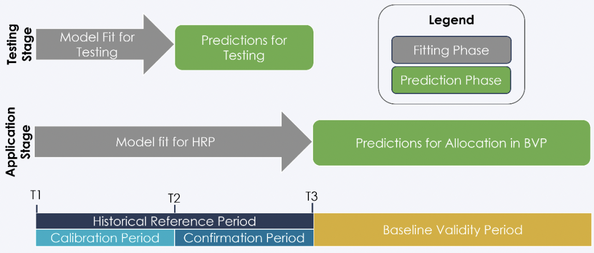
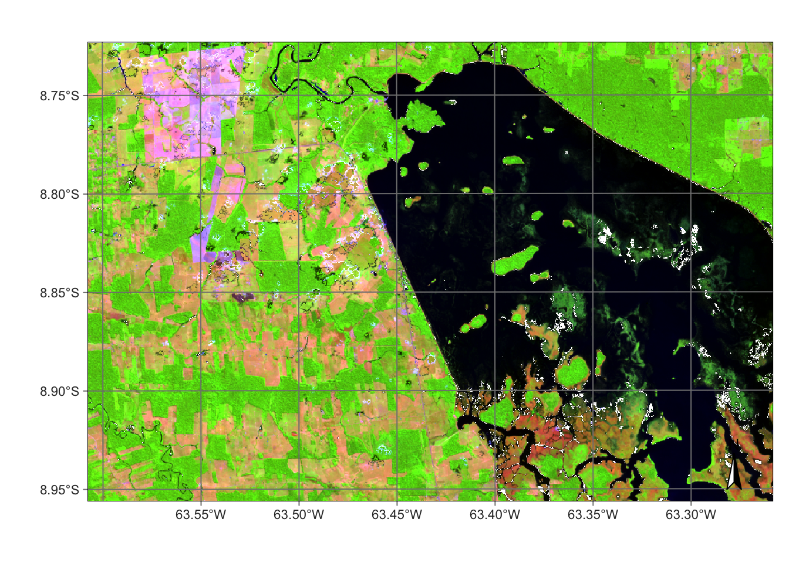
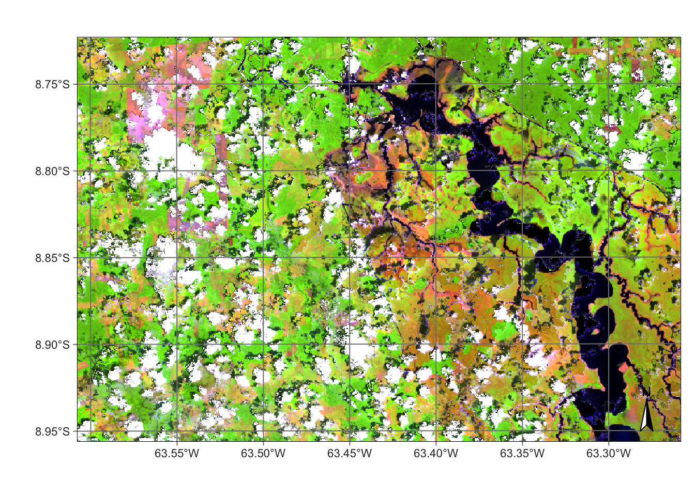
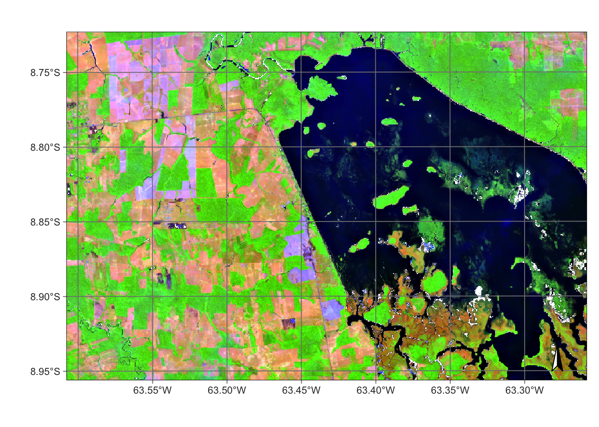

The following workflow provides a starter script for deriving deforestation risk maps in accordance with Verra’s new methodology for unplanned deforestation allocation in jurisdictional nested REDD+ projects using the VT0007 toolset.
Two workflow approaches are detailed below. Workflow-2 is coded using Python and Google Earth Engine functions that are more suited to larger areas of interest. For comparison purposes, both workflows derive outputs from the same image collection of STAC-formatted analysis-ready-data of Landsat scenes, following steps outlined in Verra’s recommended sequence of deforestation risk map development Verra (2021) . Workflow-1, which is coded using the R ecosystem, allows additional model tuning functions suited to analysis of smaller areas.

Figure 1: Verra’s recommended risk map development sequence (VT0007:6)
1. Workflow in R
Process data cube
For shawcasing purposes, we import a training dataset from the sitsdata package from a study of Brazil’s Samuel Hydroelectric Dam in Rondonia State conducted between 2020-06-04 to 2021-08-26. To evaluate this training sample, we assemble below a data cube of Sentinel-2-L2A-COGS images from the AWS open bucket. Raster normalization is implemented with sits_regularize functions to apply a cloud masking and back-filling of missing pixels by cloudless ranking and global median values across 16-day intervals.
# build irregular data cube from single sentinel tiles2_cube_ro <-sits_cube(source ="AWS",collection ="SENTINEL-S2-L2A-COGS",tiles ="20LMR",bands =c("B02", "B8A", "B11", "SCL"),start_date =as.Date("2020-06-01"),end_date =as.Date("2021-09-01"),progress =FALSE)
plot(s2_reg_cube_ro,red ="B11",green ="B8A",blue ="B02",date ="2020-07-04" )plot(s2_reg_cube_ro,red ="B11",green ="B8A",blue ="B02",date ="2020-11-09" )plot(s2_reg_cube_ro, red ="B11", green ="B8A", blue ="B02", date ="2021-08-08" )



Classify data cube
We import a training set of 480 times series points specifically designed to detect deforestation, which comprise of four classes (Burned_Area, Forest, Highly_Degraded, and Cleared_Area). Training samples are fitted to a Random Forest model and post-processed with a Bayesian smoothing.
# Load the training setdata("samples_prodes_4classes")# Select the same three bands used in the data cubesamples_4classes_3bands <-sits_select(data = samples_prodes_4classes,bands =c("B02", "B8A", "B11") )# Train a random forest modelrfor_model <-sits_train(samples = samples_4classes_3bands,ml_method =sits_rfor() )# Classify the small area cubes2_cube_probs <-sits_classify(data = s2_reg_cube_ro,ml_model = rfor_model,output_dir ="./cubes/02_class/",memsize =15,multicores =5 )# Post-process the probability cubes2_cube_bayes <-sits_smooth(cube = s2_cube_probs,output_dir ="./cubes/02_class/",memsize =16,multicores =4 )# Label the post-processed probability cubes2_cube_label <-sits_label_classification(cube = s2_cube_bayes,output_dir ="./cubes/02_class/",memsize =16,multicores =4 )plot(s2_cube_label)
Map uncertainty
To improve model performance, we estimate class uncertainty and plot these pixel error metrics. Results below reveal highest uncertainty levels in classification of wetland and water areas.
As expected, the places of highest uncertainty are those covered by surface water or associated with wetlands. These places are likely to be misclassified. For this reason, sits provides sits_uncertainty_sampling(), which takes the uncertainty cube as its input and produces a tibble with locations in WGS84 with high uncertainty (Camara et al., n.d.).
# Find samples with high uncertaintynew_samples <-sits_uncertainty_sampling(uncert_cube = s2_cube_uncert,n =20,min_uncert =0.5,sampling_window =10 )# View the location of the samplessits_view(new_samples)
Add training samples
We can then use these points of high-uncertainty as new samples to add to our current training dataset. Once we identify their feature classes and relabel them correctly, we append them to derive an augmented samples_round_2.
# Label the new samplesnew_samples$label <-"Wetland"# Obtain the time series from the regularized cubenew_samples_ts <-sits_get_data(cube = s2_reg_cube_ro,samples = new_samples )# Add new class to original samplessamples_round_2 <- dplyr::bind_rows( samples_4classes_3bands, new_samples_ts )# Train a RF model with the new sample setrfor_model_v2 <-sits_train(samples = samples_round_2,ml_method =sits_rfor() )# Classify the small area cubes2_cube_probs_v2 <-sits_classify(data = s2_reg_cube_ro,ml_model = rfor_model_v2,output_dir ="./cubes/02_class/",version ="v2",memsize =16,multicores =4 )# Post-process the probability cubes2_cube_bayes_v2 <-sits_smooth(cube = s2_cube_probs_v2,output_dir ="./cubes/04_smooth/",version ="v2",memsize =16,multicores =4 )# Label the post-processed probability cubes2_cube_label_v2 <-sits_label_classification(cube = s2_cube_bayes_v2,output_dir ="./cubes/05_tuned/",version ="v2",memsize =16,multicores =4 )# Plot the second version of the classified cubeplot(s2_cube_label_v2)
To select a validation subset of the map, sits recommends Cochran’s method for stratified random sampling (Cochran 1977). The method divides the population into homogeneous subgroups, or strata, and then applying random sampling within each stratum. Alternatively, ad-hoc parameterization is suggested as follows.
|
| | 0%
|
|======================================================================| 100%
Deleting layer `ro_samples' using driver `ESRI Shapefile'
Writing layer `ro_samples' to data source
`./samples/ro_samples.shp' using driver `ESRI Shapefile'
Writing 2450 features with 1 fields and geometry type Point.
sf::st_write(ro_samples_sf,"./samples/ro_samples.csv",layer_options ="GEOMETRY=AS_XY",append =FALSE# TRUE if editing existing sample)
Deleting layer `ro_samples' using driver `CSV'
Writing layer `ro_samples' to data source
`./samples/ro_samples.csv' using driver `CSV'
options: GEOMETRY=AS_XY
Updating existing layer ro_samples
Writing 2450 features with 1 fields and geometry type Point.
Confusion matrix
# Calculate accuracy according to Olofsson's methodarea_acc <-sits_accuracy(s2_cube_label_v2,validation = ro_samples_sf,multicores =4)# Print the area estimated accuracyarea_acc
Area Weighted Statistics
Overall Accuracy = 1
Area-Weighted Users and Producers Accuracy
User Producer
Burned_Area 1 1
Cleared_Area 1 1
Forest 1 1
Highly_Degraded 1 1
Wetland 1 1
Mapped Area x Estimated Area (ha)
Mapped Area (ha) Error-Adjusted Area (ha) Conf Interval (ha)
Burned_Area 993.51 993.51 0
Cleared_Area 36519.48 36519.48 0
Forest 24261.93 24261.93 0
Highly_Degraded 4565.07 4565.07 0
Wetland 32886.81 32886.81 0
![]()